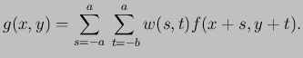
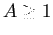
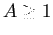
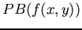
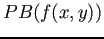

Siguiente: Detección de puntos claves Subir: Realce de imágenes en Anterior: Filtrado pasa altos Índice General
Sea una constante ,  la imagen sobre la cual aplicaremos el filtrado de alta potencia,
 el resultado de aplicar un filtro pasa bajos a la imagen
la imagen sobre la cual aplicaremos el filtrado de alta potencia,
 el resultado de aplicar un filtro pasa bajos a la imagen  y
y  el resultado de la operación, el filtrado de alta potencia queda definido como en la ecuación (2.8). En el caso particular de establecer el valor , se obtiene un filtrado pasa altos.
el resultado de la operación, el filtrado de alta potencia queda definido como en la ecuación (2.8). En el caso particular de establecer el valor , se obtiene un filtrado pasa altos.